COCUDI · Competencia 4.4 Protección del entorno
Mis dispositivos: compra, uso y desecho
Un recorrido por los aparatos que he tenido, cuánto me duraron y qué pasó con ellos. Me sirve para ver mis hábitos de consumo y su impacto en el medio ambiente.
Organizador gráfico: compra, uso y desecho
Mis prácticas actuales, construidas a partir de los 20 dispositivos que he tenido desde 2003.
Compra
Cómo y por qué adquiero
- Mis primeras computadoras fueron de la familia, compartidas o heredadas: Compaq, Acer, HP y hasta una laptop ganada en una rifa.
- Desde 2011 compro Apple. Con la MacBook Pro entré al ecosistema de macOS y ya no salí: hoy uso MacBook Air M4, iPhone 14 Pro, Apple Watch y AirPods Pro.
- Varias compras fueron de segunda mano: MacBook Pro 2012 ($5,000 + $2,000 de mejoras), iPad mini ($3,500) e iPhone 5c ($5,000).
- Desde 2018 saco el celular con mi plan y lo cambio cuando se renueva: XR, 12 y 14 Pro. El plan me facilita cambiar aunque el equipo anterior siga funcionando.
- El precio de mis celulares pasó de $5,000 (iPhone 5c) a $27,000 (iPhone 14 Pro).
Uso
Cómo los cuido y cuánta energía consumo
- Paso de 4 a 6 horas al día frente a pantallas.
- Dejo el celular cargando toda la noche, con la carga optimizada activada.
- Apago la Mac con frecuencia, pero prefiero tenerla conectada y no uso modos de ahorro porque la vuelven lenta.
- Reparo y mejoro: cambié la pantalla del iPod, le puse SSD y RAM a la MacBook Pro, limpio mis equipos y los llevo a mantenimiento cada dos años.
- Cuido los cables reforzándolos con termofit o comprando cables más resistentes.
- En la nube solo dejo lo que uso seguido; lo demás va a un disco externo de 5 TB.
- Con la IA uso metaprompting y skills para hacer menos consultas.
Desecho
Qué pasa cuando dejo de usarlos
- 13 de mis 20 dispositivos siguieron en uso con familiares o amigos: vendidos, donados o regalados. La MacBook Pro 2012 y el iPhone XR siguen funcionando hoy.
- Solo una vez llevé un equipo a reciclar: la laptop HP de la rifa, en Office Depot.
- La laptop Compaq se averió y sigue guardada en casa.
- De mis tres Nokia no sé dónde terminaron: dos los perdí y uno se descompuso.
- Los cargadores los conservo, los dono o los reparo.
Línea del tiempo: computadoras
De la primera computadora de la casa a la que uso hoy.
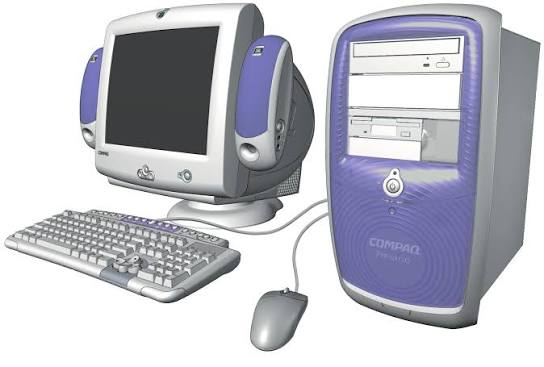
Compaq Presario de escritorio
Mi primera computadora, y a ella le debo mi pasión por la tecnología. En ella aprendí a usar el símbolo del sistema, la paquetería de oficina, el sistema de archivos y la Enciclopedia Encarta. Navegaba en internet con tarjetas Todito Card, porque la conexión era muy cara, y aprendí a quemar CD, descargar música, compartir archivos y jugar videojuegos.
Laptop Compaq
Una laptop muy buena. Le instalé varios sistemas operativos, de Windows Vista a Windows 7, pero con Windows 8 ya se alentaba.
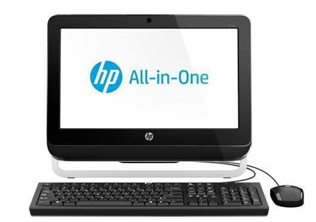
HP All-in-One
La tuvimos para mis estudios universitarios. Terminó con Windows 10.
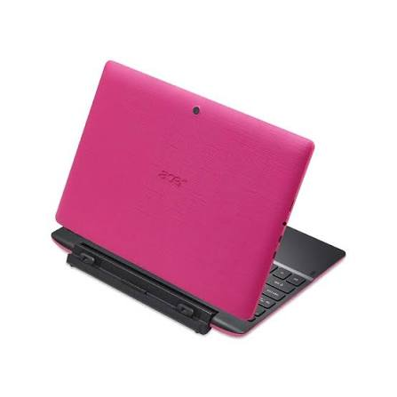
Acer 2 en 1 rosa
Mi mamá la compró para los dos. Funcionaba como tableta y como laptop al conectarle el teclado, pero era demasiado lenta para reconocer el teclado y Windows 10 le pesaba mucho.
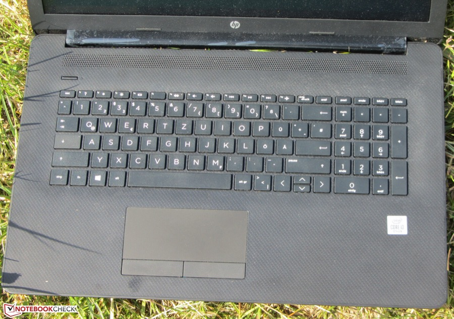
Laptop HP básica
Mi mamá se la ganó en una rifa y me la dio. Era muy básica y súper lenta.
MacBook Pro 2012
Para mi gusto, la mejor computadora de Apple. La compré usada en $5,000 y le invertí $2,000 para ponerle disco SSD y más memoria RAM. Quedó increíble. Con ella entré al ecosistema de macOS y ya no salí.
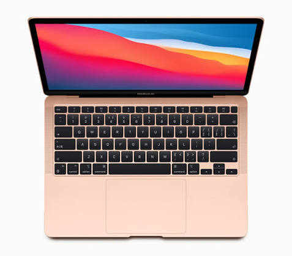
MacBook Air M1
La compramos mi esposa y yo. Con ella trabajé después de vender la MacBook Pro.
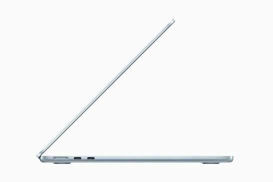
MacBook Air M4
Mi computadora actual y la primera que compré nueva, en $19,000.
Línea del tiempo: celulares y dispositivos móviles
Del Nokia de la primaria al iPhone que uso hoy.
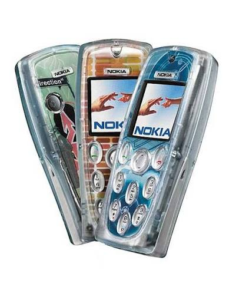
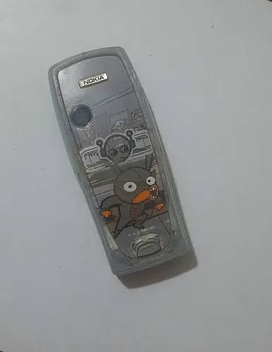
Nokia 3200
Mi celular de la primaria. La gran novedad era que tenía la carátula transparente y le podías cambiar los stickers para personalizarlo.
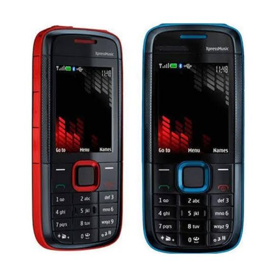
Nokia XpressMusic
Mi celular de la prepa, pensado para escuchar música.
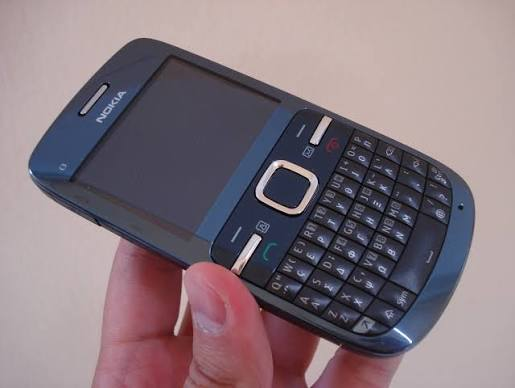
Nokia C3
Al terminar la prepa lo usaba para compartirle internet a mi iPod touch.
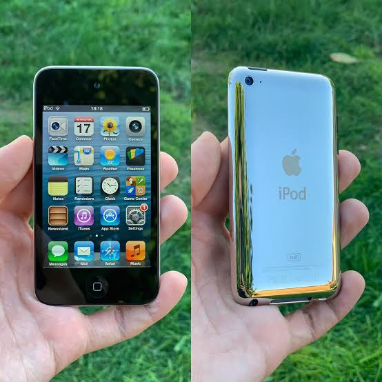
iPod touch 4.ª generación
El primer aparato que me compré yo, y uno que anhelaba tener. Fue mi entrada al mundo de Apple. Se me rompió la pantalla y la mandé reparar.
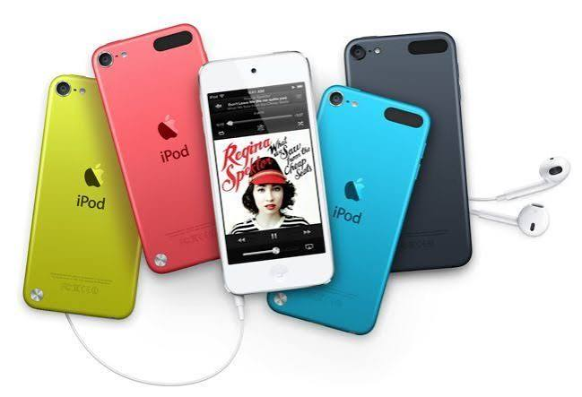
iPod touch 5.ª generación
Mi segundo iPod touch.
iPad mini
Lo compré de segunda mano.
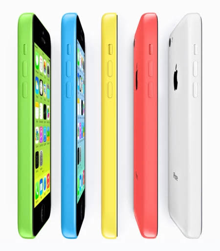
iPhone 5c
Mi primer iPhone, comprado de uso. Después alguien en internet me lo cambió por uno completamente nuevo con menos almacenamiento: perdí espacio, pero gané garantía.
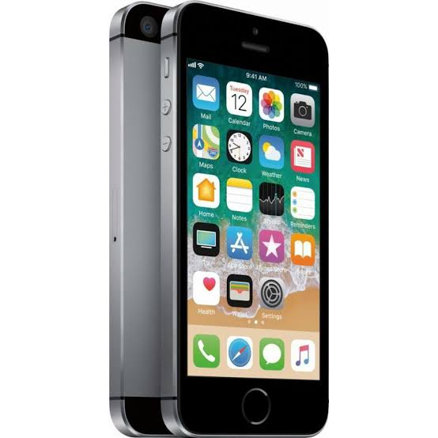
iPhone SE (1.ª generación)
El primer celular que pude comprar completamente nuevo.
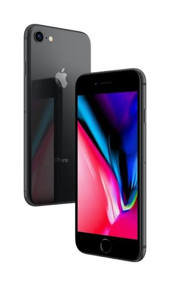
iPhone 8
Me costó $10,000. Se me estrelló la pantalla con un cajón de madera.
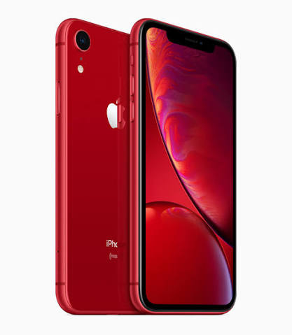
iPhone XR
Liquidé lo que debía del iPhone 8 y lo saqué de mi plan a pagos.
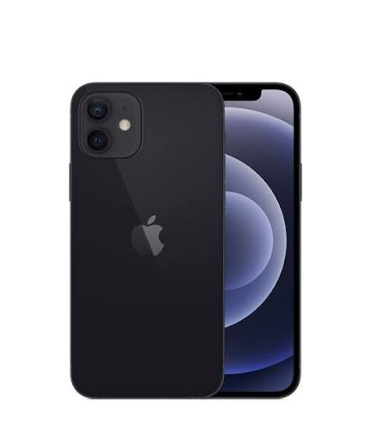
iPhone 12
Al terminar mi plan lo renové por el iPhone 12.
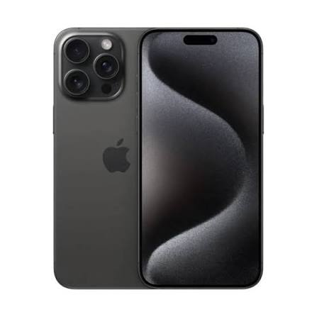
iPhone 14 Pro
Lo cambié en mi plan. Es el más caro que he tenido.